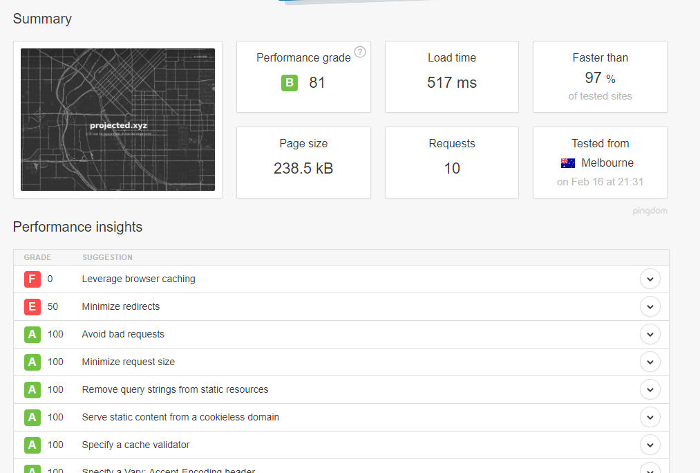
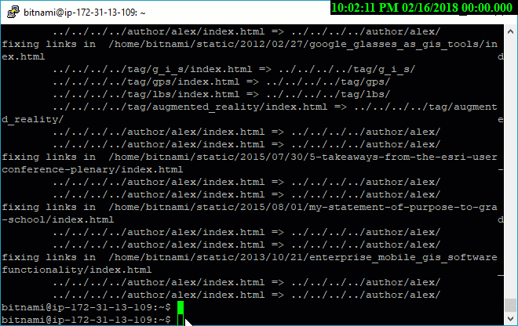

Going serverless on my ghost blog with s3, route 53, and cloudfront
Why? So I've had a blog for years, the first permutation was rockymountaingeo.com. I've always done hosting with some sort of LAMP server. This has been great. Super low cost, low maintinence linux setup. Blah blah blah. When I made the switch to projected.xyz/old, I decided on the ghost platform and used bitnami as my host, because hey had a nice setup with some premaid images and I could bring those to the aws cloud. The cost was on par with other hosts-- things start with a free tier and then move up to around 9 - 12 bucks per month, and I got my very own dedicated server. This has been great for the last few years. But something has been increasingly bothering me. Why the hell am I paying to "serve" something that I literally don't even maintain? If you can count on two hands the amount you blog in one year, you probably shouldn't be maintaining a server. With all this talk of reducing energy consumption and saving the earth, running a blog in a datacenter that's serving your crappy content from 5 years ago that seldom gets read doesn't really seem like earthly stewardship to me. After all that piece you wrote on alternative energy just might be served by a godaddy server that's getting its power from a coal fired power plant (ouch). These thoughts usually hit me around renewal season with my domains that I've purchased and have yet to use. Total guilt for good intentions gone to waste.
So I made a decision. For one, I'm letting my domains that I'll never use lapse. Say goodbye to spatialjoin.com and spatialjoin.org.
Hey #gistribe I'll be letting the domains https://t.co/4O7hOi8Jyj and https://t.co/aoSYrhfULv expire in February, I don't want to squat or receive $$$ on them because I "got to them first". Hoping for good karma for my future domain pursuits by doing this. pic.twitter.com/c7zm8MGopR
— Alex Mahrou ☁️ 📊 (@projectedxyz) January 27, 2018
As of writing this, they're yours for the taking. More importantly, I decided that I'm done with the busienss of servers. Like really. Even Docker and Kubernetes (which sounds like some sort of obscure disease) are still to server-like for me. Yeah, bold claim, those are like bell bottoms-- you're gonna regret this in-between period in the future, trust me.
#DevDiscuss I haven't used containers and feel like I will sit this out, let hype curves pass, and wait for more innovative devops.
— Alex Mahrou ☁️ 📊 (@projectedxyz) June 28, 2017
Patches, security, having a crappy DDOS target just sitting on the public internet (yeah done with that), serving up http only just seems kinda lame in 2018. This was compounded by the fact that amazon announced that they were raising their prime rates. That was it, the game was on, and I was going to get ahead of this however I could. I could no longer justify throwing away 10 bucks a month for crap. There had to be a better way.
Amazon: "We raised the cost of prime!"
— Alex Mahrou ☁️ 📊 (@projectedxyz) January 20, 2018
Me: "Time to transition my blog to static pages and save 10 bucks a month!"
The game of 🐈 and 🐁 continues
And finally, to me the last straw was google's announcement that they were drawing a line in the sand on http come July of 2018.
Unofficially Say goodbye to httphttps://t.co/v6tutX0FQR
— Alex Mahrou ☁️ 📊 (@projectedxyz) February 10, 2018
I looked around at various ways to go to a simplified architecture, increase performance, and save dough. Medium seemed like a good deal (Free), but they stopped supporting custom domains. Also, medium is great but it's just an extension of the twitter. In essence an exit to the walled garden leads to a bigger walled garden. Also there's the vanity aspect of medium, they have claps, or applause (whatever it's called), it's just another way to keep score. Even from my first blog's inception, I never cared to put analytics or tracking on it, monetize, drive comments, optimize SEO, measure my social media reach, clout, or [insert popularity contest metric here]. My blog just needs to be something I can write about whenever I get inspired, and serve as as one-way vessel to send off my thoughts into the ether of the internet spirit world like one of those candle boats on a river in Japan. Toro nagashi-- yeah I googled it
Also, the technical challenge on the medium avenue is, just... bush league (not worth a this meta-blog post about creating a blogging platform). No thanks. I kept looking. I learned about a tool called buster on github. It's a python module that is a static site generator for ghost... SWEET. Most folks use it for taking snapshots of their ghost blogs and creating static websites on github pages. That's great, but github pages doesn't offer ssl support on custom domains and with the google timeline on chrome support for http ending, I figured I needed to continue the search.
ENTER AWS S3 w/Cloudfront CDN That's when I found that you can actually host a static website on aws s3. There's tons of writeups on how to set this up, even this little handy one from Amazon Anyone that works with me or knows me well knows that I'm super bullish on Microsoft's Azure cloud-- I used it every chance I can get. But I'm no single cloud one-trick-pony. And if anyone REALLY knows me, they'd know that I started with AWS, and moved on to azure for more work, because that's where I've been able to create things working for fortune 500 firms that have EA agreements with Microsoft-- i.e. freebies. So for due diligence, I checked out the azure offer and feature for feature, I could have used azure, except for one thing... Amazon AWS offers free SSL certs in Cloudfront if you host your domain dns records with them in aws route 53 and use their global cdn... That sealed the deal folks. The cdn thing intruiged me too. This means that I could literally have edge servers around the world to host my blog content enterprise style and only pay for storage. So yes, even if you go serverless, there is still always a server. I just upgraded my server to what is likely biggest front of servers in the world-- coattails and commodities folks, ride em like the wind.
Yeah look below. This is austrailia in under a second, because I can. LOL

So what did I have to do? This is by no means a technical step by step but rather a punch list high level stuff I needed to get done.
- Moved my domain DNS (first) and domain wholly over to AWS Route 53 (one time fee of $12 bucks; well worth it)
- Created s3 static website using amazon's step-by-step referenced above
- Created a cloudfront distribution that points to my s3 bucket address with this walkthrough
- Assigned a free ssl certificate using AWS Certificate Manager with this walkthrough
- Putty'd in to my bitnami server running ghost and ran pip install buster to get buster
- Generated the static website with buster
 - Oh how handy, with the bitnami server build, the aws CLI tools were already installed. So I followed the instuctions here to push my website directly to s3.
Still to do I need to fix my rss and home links. I'd also plan to automate this all in one script that'll run buster, fix the home/rss links/feeds, then push to aws. That's a low bar.
In Conclusion, I've reduced my monthly hosting bill by 99%, increased security, rid myself of server/patch management, and increased my little blog's resiliency to that of an internet fortress with the giant mote of aws. I'd also like to think that I'm eliminating waste somehow, but I have yet to see a quantitative metric to prove as such-- other than my bank account.
My old binami server is now just a dev server that I shut down when I'm not using, so that presumably some bitcoin bro in his parents basement can repurpose those cores to achieve his lamborghini/bugatti dreams. <- But that's a blog post for another day.
🍺Cheers🍺,
Alex